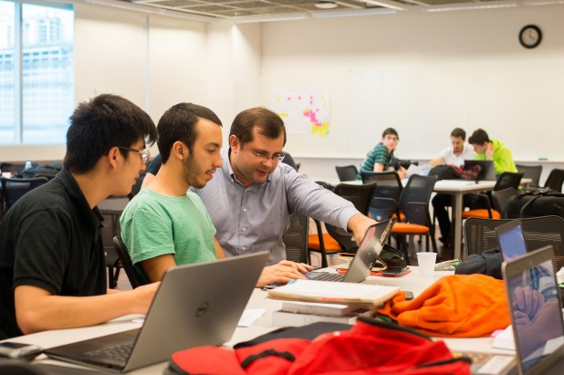

O Projeto Final de Desing de Software foi a elaboração de um jogo pelos alunos, usando a biblioteca Pygame do Python.
O Projeto final de Co-Design de Aplicativos consiste na construção de um aplicativo que supre as necessidades dos usuários entrevistados ao longo do semestre, o aplicativo é desenvolvido com HTML, CSS e JavaScript.
O Projeto Final de Ciência dos Dados é a análise de um banco de dados com a biblioteca Pandas do Python, com o objetivo de tirar conclusoes e inferências usando estatística e probabilidade.